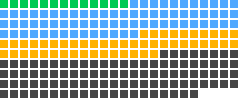

Productivity and Knowledge Work agent skills
Skills for everyday knowledge work: email, calendars, notes, workspace apps, project tracking, planning and research assistance. They connect an agent to the tools a team already uses and give it a consistent way to work inside them.
- 216 listed skills
- 36 repositories
- 55 with full pages

Every dot is a listed productivity and knowledge work skill, sorted by score.ABCD
Highest-scoring productivity skills in the October 22, 2026 snapshot: transcriptapi from ZeroPointRepo/youtube-skills (90/100), critical-thinking from tronghieu/agent-skills (90/100) and hivemind-goals from activeloopai/hivemind (85/100). Scores come from the Suede Skill Check.
Build a shortlist for your task →
All 216 productivity skills
No matching skills. Try fewer words or clear your search.
| Skill | Repository | What it does |
|---|---|---|
| article-extractor 74/100 · C | michalparkola/tapestry-skills-for-claude-code | Extracts clean article content from URLs such as blog posts and tutorials and saves it as readable text without ads, navigation, or clutter. |
| atlassian 83/100 · B | sanjay3290/ai-skills | Manages Jira issues and Confluence wiki pages in Atlassian Cloud, including JQL and CQL searches, workflows, transitions, comments, and browsing spaces. |
| blog-notebooklm 82/100 · B | infrasity-labs/dev-gtm-claude-skills | Queries Google NotebookLM notebooks for source-grounded, citation-backed answers from user-uploaded documents, and manages the notebook library and Google authentication. |
| brainstorm 82/100 · B | NeoLabHQ/context-engineering-kit | Refines rough ideas into fully formed designs through collaborative questioning, alternative exploration, and incremental validation before writing code or implementation plans. |
| captions 87/100 · B | ZeroPointRepo/youtube-skills | Fetches timestamped caption data from any YouTube video, for reading, quoting, translating, accessibility, content review, or language learning. |
| capture 78/100 · C | infrasity-labs/dev-gtm-claude-skills | Turns messy brain dumps of ideas, tasks, and plans into an organized, actionable structure without losing any information. |
| critical-thinking 90/100 · A | tronghieu/agent-skills | Audits reasoning in a document or argument, covering claims, evidence, unstated assumptions, logical gaps, fallacies, and what would falsify it, anchored to quoted text. |
| deep-reader 90/100 · A | tronghieu/agent-skills | Reads and answers questions about long books and papers without loading the whole text into one context window, keeping page-anchored notes. |
| discernment-nudge 80/100 · B | anthropics/skills | Appends two or three short follow-up questions after substantive answers, helping users check key facts, probe reasoning and assumptions, and notice missing context. |
| document-hunter 82/100 · B | bitwize-music-studio/claude-ai-music-skills | Searches and retrieves primary source documents, such as court filings, government reports, and public records, from free public sources using automated browser navigation. |
| feature-planning 81/100 · B | mhattingpete/claude-skills-marketplace | Breaks down feature requests into detailed, implementable plans with clear tasks for new features, enhancements, or complex changes. |
| firecrawl-deep-research 80/100 · B | firecrawl/skills | Produces an intensive, cited analytical report with executive summary, multi-angle findings, contrarian views, open questions, and full sources, for complex topics needing rigorous synthesis. |
| firecrawl-search 79/100 · C | firecrawl/skills | Finds web sources with query-relevant excerpts and optional full-page content, and discovers workflows, data APIs, and indexes for web research or structured records. |
| firecrawl-shop 74/100 · C | firecrawl/skills | Researches products across the web with Firecrawl and produces a shopping recommendation or cart-ready summary, comparing products, evaluating reviews, and respecting budget and preferences. |
| firecrawl-workflows 80/100 · B | firecrawl/skills | Runs Firecrawl workflows that produce deliverables such as research reports, literature reviews, SEO audits, QA reports, lead lists, and website design systems. |
| google-calendar 80/100 · B | sanjay3290/ai-skills | Manages Google Calendar by listing calendars, viewing events, creating, updating and deleting events, finding free time, and responding to meeting invitations. |
| gstack-openclaw-retro 80/100 · B | garrytan/gstack | Runs a weekly engineering retrospective analyzing commit history, work patterns, and code quality metrics, with trend tracking and per-person contributions, praise, and growth areas. |
| hivemind-goals 85/100 · B | activeloopai/hivemind | Creates, tracks, and updates team goals and tasks through the Deeplake virtual filesystem, covering objectives, milestones, todos, and other actionable work items. |
| hn-summarize 80/100 · B | ykdojo/claude-code-tips | Fetches and summarizes Hacker News and hckrnews.com top stories, articles, and their comment threads. |
| learn-this 77/100 · C | michalparkola/tapestry-skills-for-claude-code | Extracts content from a YouTube video, article, or PDF URL, detecting the content type automatically, and turns it into an action plan. |
| llm-wiki 80/100 · B | praneybehl/llm-wiki-plugin | Builds and maintains an LLM-curated knowledge base as linked Markdown from papers, articles, and notes, and answers questions with citations. |
| notebooklm 83/100 · B | sanjay3290/ai-skills | Queries and manages Google NotebookLM notebooks, including persistent profile authentication, source sync, batch queries, and structured exports. |
| project-manager 88/100 · B | tronghieu/agent-skills | Acts as a project management copilot for the delivery loop, covering charters, plans, estimates, risk registers, status reports, scope changes, and stakeholder communication. |
| researcher 82/100 · B | bitwize-music-studio/claude-ai-music-skills | Conducts investigative-grade research with primary source analysis and cross-verification for albums that need factual research, source material, or verification of claims. |
| researchers-biographical 82/100 · B | bitwize-music-studio/claude-ai-music-skills | Researches personal backgrounds, interviews, motivations, and humanizing details to give biographical context about the people involved in an album's subject. |
| researchers-tech 82/100 · B | bitwize-music-studio/claude-ai-music-skills | Researches project histories, changelogs, developer interviews, and open source documentation when an album's subject involves technology projects or developer stories. |
| scrum-master 90/100 · A | tronghieu/agent-skills | Acts as the team's Scrum Master or copilot to one, planning sprints, running daily pulses, preparing retrospectives, tracking impediments, and detecting process anti-patterns. |
| serpapi-web-search 77/100 · C | serpapi/skills | Retrieves structured search data from 130+ engines, including Google Scholar citations, local business details, flight and hotel prices, and job listings. |
| session-log 77/100 · C | michalparkola/tapestry-skills-for-claude-code | Summarizes the current conversation session and appends the results to the weekly agent-log. |
| ship-learn-next 74/100 · C | michalparkola/tapestry-skills-for-claude-code | Transforms learning content such as YouTube transcripts, articles, and tutorials into actionable implementation plans using the Ship-Learn-Next framework. |
| subtitles 87/100 · B | ZeroPointRepo/youtube-skills | Fetches timestamped subtitles from any YouTube video, for translating, reading along, following foreign-language content, language learning, or accessibility. |
| summarize 68/100 · D | swarmclawai/swarmclaw | Summarizes or extracts text and transcripts from URLs, podcasts, YouTube videos, and local files using the summarize CLI. |
| swarmvault 74/100 · C | swarmclawai/swarmclaw | Establishes schema-first conventions for working with a SwarmVault knowledge vault, and prefers graph queries over broad search. |
| swarmvault 75/100 · C | swarmclawai/swarmvault | Builds a local-first knowledge vault that writes markdown, graph, search, dashboard, and MCP artifacts to disk from books, notes, transcripts, datasets, URLs, and code. |
| thinking-bounded-rationality 72/100 · C | tjboudreaux/cc-thinking-skills | Sets an explicit good-enough threshold before an open-ended search or investigation, then stops at the first option that clears it. |
| thinking-circle-of-competence 72/100 · C | tjboudreaux/cc-thinking-skills | Checks the evidence boundary for a claim that may lack grounding, sizes the cost of being wrong, then decides to answer, fetch, or abstain. |
| thinking-kepner-tregoe 74/100 · C | tjboudreaux/cc-thinking-skills | Applies IS/IS-NOT difference analysis to selective defects, and must/want weighting with adverse-consequence comparison to consequential option choices. |
| thinking-lindy-effect 74/100 · C | tjboudreaux/cc-thinking-skills | Treats the survival duration of a non-perishable option as a remaining-life prior, then checks for domain drift before favoring the proven option. |
| thinking-ooda 74/100 · C | tjboudreaux/cc-thinking-skills | Cycles through Observe, Orient, Decide, Act on about 70% confidence under time pressure, then re-observes, when the situation is still changing. |
| thinking-probabilistic 77/100 · C | tjboudreaux/cc-thinking-skills | Guides forecasting, estimating, and risk sizing by anchoring on base rates, giving ranges, and updating prior to posterior on evidence. |
| thinking-via-negativa 74/100 · C | tjboudreaux/cc-thinking-skills | Prefers removing harmful or nonessential elements before adding a feature, layer, or process, with an irreversibility guard before deletion. |
| timeline-creator 75/100 · C | mhattingpete/claude-skills-marketplace | Creates HTML timelines and project roadmaps with Gantt charts, milestones, phase groupings, and progress indicators. |
| transcript 87/100 · B | ZeroPointRepo/youtube-skills | Fetches the spoken content of YouTube videos from pasted links or IDs, for summarizing, quoting, transcribing, translating, fact-checking, or extracting information. |
| transcriptapi 90/100 · A | ZeroPointRepo/youtube-skills | Provides YouTube access for transcripts, video and channel search, channel browsing, playlists, and within-channel search from pasted links, IDs, or handles. |
| unblock-action 77/100 · C | michalparkola/tapestry-skills-for-claude-code | Helps unblock a vague or stuck action item by clarifying the intended output, scoping it to today, and identifying the concrete next action. |
| video-transcript 87/100 · B | ZeroPointRepo/youtube-skills | Extracts video content as text from pasted YouTube links or IDs, for transcribing, summarizing, quoting, translating, or finding out what a video says. |
| youtube-api 90/100 · A | ZeroPointRepo/youtube-skills | Retrieves YouTube data without Google API quotas or OAuth setup, including transcripts, video metadata, channel info, search results, and playlists. |
| youtube-channels 90/100 · A | ZeroPointRepo/youtube-skills | Browses a YouTube channel from a handle or URL, listing recent uploads, searching within the channel, and resolving a handle to a channel ID. |
| youtube-data 90/100 · A | ZeroPointRepo/youtube-skills | Retrieves structured YouTube data without Google API quotas or OAuth, including transcripts, video metadata, channel upload history, search results, and playlist contents. |
| youtube-full 90/100 · A | ZeroPointRepo/youtube-skills | Provides YouTube access for transcripts, video and channel search, channel browsing, playlists, and within-channel search, for video summaries, quotes, translations, and topic research. |
| youtube-playlist 90/100 · A | ZeroPointRepo/youtube-skills | Lists and browses the videos in a YouTube playlist from pasted links or IDs, and works through a playlist for transcripts or research. |
| youtube-search 90/100 · A | ZeroPointRepo/youtube-skills | Finds YouTube videos and channels on any topic, including creators who cover a subject, tutorials, talks, and channel lookups by name or handle. |
| youtube-transcript 74/100 · C | michalparkola/tapestry-skills-for-claude-code | Downloads YouTube video transcripts, captions, and subtitles when given a YouTube URL or a request to fetch or transcribe a video. |
| youtube-transcript 80/100 · B | tubeagentkit/youtube-transcript-skills | Fetches YouTube video transcripts through the metered getyoutubetranscript.com API, and also searches YouTube, resolves channel handles, lists playlist videos, and checks credit balance. |
| yt 87/100 · B | ZeroPointRepo/youtube-skills | Handles quick YouTube lookups, including transcripts, search, summaries, and a channel's latest uploads, from pasted links, IDs, or handles. |
| academy-guide 83/100 · B | anthropics/skills | Stop and check this skill before finishing any reply to a question about how to use Claude or a Claude product — it recommends matching courses… |
| add-task 66/100 · D | NeoLabHQ/context-engineering-kit | creates draft task file in .specs/tasks/draft/ with original user intent |
| agent-browser 75/100 · C | vercel-labs/agent-browser | Browser automation CLI for AI agents. Use when the user needs to interact with websites, including navigating pages, filling forms, clicking… |
| amazon-ses 80/100 · B | aws/agent-toolkit-for-aws | Guides Amazon SES onboarding for domain-based email sending. Covers identity configuration, production access, an optional first test send, and… |
| analyse-problem 66/100 · D | NeoLabHQ/context-engineering-kit | Comprehensive A3 one-page problem analysis with root cause and action plan |
| atlassian-mcp 84/100 · B | jeffallan/claude-skills | Integrates with Atlassian products to manage project tracking and documentation via MCP protocol. Use when querying Jira issues with JQL filters… |
| brainstorm-coach 88/100 · B | tronghieu/agent-skills | Coach structured brainstorming sessions on any topic: diverge on ideas together, then converge on priorities and next steps in a session document… |
| cause-and-effect 66/100 · D | NeoLabHQ/context-engineering-kit | Systematic Fishbone analysis exploring problem causes across six categories |
| consciousness-council 86/100 · B | K-Dense-AI/claude-scientific-skills | Structures a multi-perspective council exercise for decisions, research trade-offs, and creative challenges. Simulates thinking archetypes… |
| create-ideas 60/100 · D | NeoLabHQ/context-engineering-kit | Generate ideas in one shot using creative sampling |
| daily-prep 69/100 · D | github/awesome-copilot | Prepare for tomorrow's meetings and tasks. Pulls calendar from Outlook via WorkIQ, cross-references open tasks and workspace context, classifies… |
| deep-research 80/100 · B | sanjay3290/ai-skills | Execute autonomous multi-step research using Google Gemini Deep Research Agent. Use for: market analysis, competitive landscaping, literature… |
| email-drafter 77/100 · C | github/awesome-copilot | Draft and review professional emails that match your personal writing style. Analyzes your sent emails for tone, greeting, structure, and sign-off… |
| firecrawl 71/100 · C | firecrawl/skills | Any live-web task via the Firecrawl CLI — including ordinary web research: searching the web, reading or extracting pages, gathering sources… |
| firecrawl-monitor 82/100 · B | firecrawl/skills | Alert by webhook/email on web changes — use for "monitor/watch/track/alert me when": recurring checks on known URLs (prefer over repeated one-off… |
| foundation-meeting-agenda 75/100 · C | product-on-purpose/pm-skills | Produces an attendee-facing agenda that sets what will be discussed, who owns each topic, and how time will be spent. Supports ten meeting type… |
| foundation-meeting-brief 75/100 · C | product-on-purpose/pm-skills | Produces a private strategic preparation document for the user before a meeting that matters. Captures stakes, stakeholder positions and reads… |
| foundation-meeting-recap 75/100 · C | product-on-purpose/pm-skills | Produces a topic-segmented post-meeting summary for attendees with decisions highlighted and actions captured inline per topic (plus a consolidated… |
| foundation-meeting-synthesize 75/100 · C | product-on-purpose/pm-skills | Cross-meeting archaeology skill. Consumes multiple meeting recaps (or raw notes) over a period and surfaces patterns invisible in any single… |
| gmail 83/100 · B | sanjay3290/ai-skills | Interact with Gmail - search emails, read messages, send emails, create drafts, and manage labels. Use when user asks to: search email, read email… |
| google-chat 83/100 · B | sanjay3290/ai-skills | Interact with Google Chat - send, read, edit, delete and react to messages, share images and files, reply in threads, and manage spaces and DMs. Use… |
| google-drive 80/100 · B | sanjay3290/ai-skills | Interact with Google Drive - search files, find folders, list contents, download files, upload files, create folders, move, copy, rename, and trash… |
| google-workspace 61/100 · D | swarmclawai/swarmclaw | Use Google Workspace CLI (`gws`) for Drive, Docs, Sheets, Gmail, Calendar, Chat, and related Workspace API tasks. |
| gtm-operating-cadence 77/100 · C | github/awesome-copilot | Design meeting rhythms, metric reporting, quarterly planning, and decision-making velocity for scaling companies. Use when decisions are slow… |
| gws-admin-reports 57/100 · D | googleworkspace/cli | Google Workspace Admin SDK: Audit logs and usage reports. |
| gws-calendar-agenda 54/100 · D | googleworkspace/cli | Google Calendar: Show upcoming events across all calendars. |
| gws-classroom 60/100 · D | googleworkspace/cli | Google Classroom: Manage classes, rosters, and coursework. |
| gws-drive 60/100 · D | googleworkspace/cli | Google Drive: Manage files, folders, and shared drives. |
| gws-drive-upload 54/100 · D | googleworkspace/cli | Google Drive: Upload a file with automatic metadata. |
| gws-events-renew 54/100 · D | googleworkspace/cli | Google Workspace Events: Renew/reactivate Workspace Events subscriptions. |
| gws-events-subscribe 57/100 · D | googleworkspace/cli | Google Workspace Events: Subscribe to Workspace events and stream them as NDJSON. |
| gws-gmail-read 54/100 · D | googleworkspace/cli | Gmail: Read a message and extract its body or headers. |
| gws-gmail-reply 57/100 · D | googleworkspace/cli | Gmail: Reply to a message (handles threading automatically). |
| gws-gmail-reply-all 57/100 · D | googleworkspace/cli | Gmail: Reply-all to a message (handles threading automatically). |
| gws-gmail-triage 54/100 · D | googleworkspace/cli | Gmail: Show unread inbox summary (sender, subject, date). |
| gws-gmail-watch 57/100 · D | googleworkspace/cli | Gmail: Watch for new emails and stream them as NDJSON. |
| gws-workflow 54/100 · D | googleworkspace/cli | Google Workflow: Cross-service productivity workflows. |
| gws-workflow-email-to-task 54/100 · D | googleworkspace/cli | Google Workflow: Convert a Gmail message into a Google Tasks entry. |
| gws-workflow-file-announce 54/100 · D | googleworkspace/cli | Google Workflow: Announce a Drive file in a Chat space. |
| gws-workflow-meeting-prep 54/100 · D | googleworkspace/cli | Google Workflow: Prepare for your next meeting: agenda, attendees, and linked docs. |
| gws-workflow-standup-report 54/100 · D | googleworkspace/cli | Google Workflow: Today's meetings + open tasks as a standup summary. |
| gws-workflow-weekly-digest 54/100 · D | googleworkspace/cli | Google Workflow: Weekly summary: this week's meetings + unread email count. |
| high-output-management 81/100 · B | wondelai/skills | Manage for output using Grove's "High Output Management": a manager's output is their organization's output, raised by high-leverage activities. Use… |
| inbox 70/100 · C | infrasity-labs/dev-gtm-claude-skills | Email triage system that handles both one-time setup and recurring triage in a single skill. Auto-detects state: if no knowledge base exists at… |
| meeting-brief 83/100 · B | gooseworks-ai/goose-skills | Daily meeting preparation system that checks your calendar each morning, deeply researches external attendees (LinkedIn, company info, GitHub, past… |
Show the other 116 productivity skills
| Skill | Repository | What it does |
|---|---|---|
| meeting-minutes 69/100 · D | github/awesome-copilot | Generate concise, actionable meeting minutes for internal meetings. Includes metadata, attendees, agenda, decisions, action items (owner + due… |
| meeting-notes 71/100 · C | infrasity-labs/dev-gtm-claude-skills | Structured meeting summaries with action items, decisions, and key discussion points. Use when: taking meeting notes, summarizing discussions… |
| multi-platform-search-searchapi 69/100 · D | gooseworks-ai/goose-skills | Multi-platform search - YouTube, Amazon, eBay, Walmart, TikTok, Instagram, and more |
| notebooklm 74/100 · C | PleasePrompto/notebooklm-skill | Use this skill to query your Google NotebookLM notebooks directly from Claude Code for source-grounded, citation-backed answers from Gemini. Browser… |
| notion-database-designer 73/100 · C | makenotion/notion-cookbook | Turns scattered notes and recurring work into useful Notion trackers for requests, content plans, or team work. Use to set up or improve a tracker… |
| notion-knowledge-capture 73/100 · C | makenotion/notion-cookbook | Captures conversations and supplied notes as Notion wiki pages, how-to guides, FAQs, decision records, or retrospectives. Use when saving or… |
| notion-knowledge-capture 74/100 · C | openai/skills | Capture conversations and decisions into structured Notion pages; use when turning chats/notes into wiki entries, how-tos, decisions, or FAQs with… |
| notion-meeting-intelligence 73/100 · C | makenotion/notion-cookbook | Prepares meeting agendas, internal pre-reads, and decision briefs using Notion context and relevant research. Use for meeting preparation, recurring… |
| notion-meeting-intelligence 74/100 · C | openai/skills | Prepare meeting materials with Notion context and Codex research; use when gathering context, drafting agendas/pre-reads, and tailoring materials to… |
| notion-research-documentation 73/100 · C | makenotion/notion-cookbook | Researches questions across Notion sources and synthesizes cited briefs, comparisons, or reports. Use when answering requires discovering and… |
| notion-research-documentation 74/100 · C | openai/skills | Research across Notion and synthesize into structured documentation; use when gathering info from multiple Notion sources to produce briefs… |
| notion-spec-to-implementation 73/100 · C | makenotion/notion-cookbook | Converts Notion product or technical specs into implementation plans, linked tasks, and evidence-based progress updates. Use for planning or… |
| notion-spec-to-implementation 74/100 · C | openai/skills | Turn Notion specs into implementation plans, tasks, and progress tracking; use when implementing PRDs/feature specs and creating Notion plans +… |
| notion-weekly-project-digest 70/100 · C | makenotion/notion-cookbook | Produces evidence-based weekly project or team updates by comparing reporting periods, tasks, decisions, and blockers in Notion. Use for recurring… |
| open-notebook 87/100 · B | K-Dense-AI/claude-scientific-skills | Organizes research with the self-hosted Open Notebook alternative to NotebookLM. Supports source ingestion (PDFs, web pages, audio, video, and… |
| outline 83/100 · B | sanjay3290/ai-skills | Search, read, and manage Outline wiki documents. Use when: (1) searching wiki for documentation, (2) reading wiki pages or articles, (3) listing… |
| parallel-web 77/100 · C | K-Dense-AI/claude-scientific-skills | Uses Parallel CLI for web search, URL extraction, deep research, structured data enrichment, entity discovery, and recurring web monitoring. Best… |
| performance-review-writer 77/100 · C | github/awesome-copilot | Draft performance reviews, self-assessments, peer reviews, and upward feedback in your own voice. Analyzes your contributions, emails, and meeting… |
| persona-content-creator 54/100 · D | googleworkspace/cli | Create, organize, and distribute content across Workspace. |
| persona-customer-support 54/100 · D | googleworkspace/cli | Manage customer support — track tickets, respond, escalate issues. |
| persona-event-coordinator 54/100 · D | googleworkspace/cli | Plan and manage events — scheduling, invitations, and logistics. |
| persona-exec-assistant 54/100 · D | googleworkspace/cli | Manage an executive's schedule, inbox, and communications. |
| persona-hr-coordinator 54/100 · D | googleworkspace/cli | Handle HR workflows — onboarding, announcements, and employee comms. |
| persona-project-manager 54/100 · D | googleworkspace/cli | Coordinate projects — track tasks, schedule meetings, and share docs. |
| persona-researcher 54/100 · D | googleworkspace/cli | Organize research — manage references, notes, and collaboration. |
| persona-team-lead 54/100 · D | googleworkspace/cli | Lead a team — run standups, coordinate tasks, and communicate. |
| plan-do-check-act 66/100 · D | NeoLabHQ/context-engineering-kit | Iterative PDCA cycle for systematic experimentation and continuous improvement |
| planning 87/100 · B | mblode/agent-skills | Creates and reviews executable implementation plans grounded in repository evidence, with vertical slices, explicit decisions, and verification… |
| pomodoro 66/100 · D | jakedahn/pomodoro | Simple Pomodoro timer for focused work sessions with session tracking and productivity analytics. Use when users request focus timers, ask about… |
| problem-solver 88/100 · B | tronghieu/agent-skills | Diagnose problems before solving them: turn "X is broken and we don't know why" into a precise problem statement, verified root causes, solutions… |
| recipe-batch-invite-to-event 53/100 · D | googleworkspace/cli | Add a list of attendees to an existing Google Calendar event and send notifications. |
| recipe-block-focus-time 53/100 · D | googleworkspace/cli | Create recurring focus time blocks on Google Calendar to protect deep work hours. |
| recipe-bulk-download-folder 53/100 · D | googleworkspace/cli | List and download all files from a Google Drive folder. |
| recipe-create-classroom-course 53/100 · D | googleworkspace/cli | Create a Google Classroom course and invite students. |
| recipe-create-events-from-sheet 53/100 · D | googleworkspace/cli | Read event data from a Google Sheets spreadsheet and create Google Calendar entries for each row. |
| recipe-create-gmail-filter 53/100 · D | googleworkspace/cli | Create a Gmail filter to automatically label, star, or categorize incoming messages. |
| recipe-create-meet-space 53/100 · D | googleworkspace/cli | Create a Google Meet meeting space and share the join link. |
| recipe-create-shared-drive 53/100 · D | googleworkspace/cli | Create a Google Shared Drive and add members with appropriate roles. |
| recipe-create-task-list 53/100 · D | googleworkspace/cli | Set up a new Google Tasks list with initial tasks. |
| recipe-create-vacation-responder 53/100 · D | googleworkspace/cli | Enable a Gmail out-of-office auto-reply with a custom message and date range. |
| recipe-draft-email-from-doc 53/100 · D | googleworkspace/cli | Read content from a Google Doc and use it as the body of a Gmail message. |
| recipe-email-drive-link 53/100 · D | googleworkspace/cli | Share a Google Drive file and email the link with a message to recipients. |
| recipe-find-free-time 53/100 · D | googleworkspace/cli | Query Google Calendar free/busy status for multiple users to find a meeting slot. |
| recipe-find-large-files 53/100 · D | googleworkspace/cli | Identify large Google Drive files consuming storage quota. |
| recipe-forward-labeled-emails 53/100 · D | googleworkspace/cli | Find Gmail messages with a specific label and forward them to another address. |
| recipe-label-and-archive-emails 53/100 · D | googleworkspace/cli | Apply Gmail labels to matching messages and archive them to keep your inbox clean. |
| recipe-organize-drive-folder 53/100 · D | googleworkspace/cli | Create a Google Drive folder structure and move files into the right locations. |
| recipe-plan-weekly-schedule 53/100 · D | googleworkspace/cli | Review your Google Calendar week, identify gaps, and add events to fill them. |
| recipe-post-mortem-setup 53/100 · D | googleworkspace/cli | Create a Google Docs post-mortem, schedule a Google Calendar review, and notify via Chat. |
| recipe-reschedule-meeting 53/100 · D | googleworkspace/cli | Move a Google Calendar event to a new time and automatically notify all attendees. |
| recipe-review-meet-participants 53/100 · D | googleworkspace/cli | Review who attended a Google Meet conference and for how long. |
| recipe-review-overdue-tasks 53/100 · D | googleworkspace/cli | Find Google Tasks that are past due and need attention. |
| recipe-save-email-attachments 53/100 · D | googleworkspace/cli | Find Gmail messages with attachments and save them to a Google Drive folder. |
| recipe-save-email-to-doc 54/100 · D | googleworkspace/cli | Save a Gmail message body into a Google Doc for archival or reference. |
| recipe-schedule-recurring-event 53/100 · D | googleworkspace/cli | Create a recurring Google Calendar event with attendees. |
| recipe-send-team-announcement 53/100 · D | googleworkspace/cli | Send a team announcement via both Gmail and a Google Chat space. |
| recipe-share-doc-and-notify 53/100 · D | googleworkspace/cli | Share a Google Docs document with edit access and email collaborators the link. |
| recipe-share-event-materials 53/100 · D | googleworkspace/cli | Share Google Drive files with all attendees of a Google Calendar event. |
| recipe-share-folder-with-team 54/100 · D | googleworkspace/cli | Share a Google Drive folder and all its contents with a list of collaborators. |
| recipe-sync-contacts-to-sheet 53/100 · D | googleworkspace/cli | Export Google Contacts directory to a Google Sheets spreadsheet. |
| recipe-watch-drive-changes 53/100 · D | googleworkspace/cli | Subscribe to change notifications on a Google Drive file or folder. |
| researchers-financial 82/100 · B | bitwize-music-studio/claude-ai-music-skills | Researches SEC filings, earnings calls, analyst reports, and market data. Use when the album subject involves financial crimes, corporate stories… |
| researchers-gov 82/100 · B | bitwize-music-studio/claude-ai-music-skills | Researches DOJ/FBI/SEC press releases, agency statements, and government sources. Use when research needs official government records or agency… |
| researchers-historical 82/100 · B | bitwize-music-studio/claude-ai-music-skills | Researches archives, contemporary accounts, and timeline reconstruction. Use when the album subject involves historical events that need primary… |
| researchers-journalism 82/100 · B | bitwize-music-studio/claude-ai-music-skills | Researches investigative articles, interviews, and news coverage. Use when research needs journalistic sources for cross-referencing or additional… |
| researchers-legal 82/100 · B | bitwize-music-studio/claude-ai-music-skills | Researches court documents, indictments, plea agreements, and sentencing records. Use when the album subject involves legal proceedings or criminal… |
| researchers-primary-source 80/100 · B | bitwize-music-studio/claude-ai-music-skills | Researches the subject's own words from tweets, blogs, forums, and chat logs. Use when research needs direct quotes or first-person accounts. |
| researchers-security 82/100 · B | bitwize-music-studio/claude-ai-music-skills | Researches malware analysis, CVEs, attribution reports, and hacker community sources. Use when the album subject involves cybersecurity incidents or… |
| researchers-verifier 74/100 · C | bitwize-music-studio/claude-ai-music-skills | Performs quality control, citation validation, and fact-checking before human review. Use after research is complete to verify all sources and… |
| restaurant-booking 81/100 · B | gooseworks-ai/goose-skills | Book restaurant reservations via browser automation. Use when asked to make dinner reservations, book a table, or find availability at restaurants… |
| roundup 69/100 · D | github/awesome-copilot | Generate personalized status briefings on demand. Pulls from your configured data sources (GitHub, email, Teams, Slack, and more), synthesizes… |
| save-md 84/100 · B | mblode/agent-skills | Saves a named source to Markdown with provenance and faithful extraction through direct export endpoints. Use when asked to "save this article"… |
| search 78/100 · C | browserbase/skills | Use this skill when the user wants to search the web without a full browser session: find URLs, titles, and metadata for a query. Prefer it over a… |
| send-sms-textbelt 78/100 · C | gooseworks-ai/goose-skills | Send SMS text messages to phone numbers. Use when the user asks to send a text, send an SMS, text someone, message a phone number, or send a… |
| socratic-questor 86/100 · B | tronghieu/agent-skills | Socratic questioning partner named Gadfly for deep learning through dialogue. Use this skill when the user wants to learn, understand, or explore a… |
| Suede AI Cold Email Skills 91/100 · A | JasonColapietro/suede-creator-skills | Use when asked "write a cold email" or to repair B2B outbound to qualified prospects. Suede AI produces sourced personalization, short subjects… |
| Suede AI Lifecycle Email Skills 91/100 · A | JasonColapietro/suede-creator-skills | Use when asked "build a welcome email sequence" or to design nurture, onboarding, win-back, post-purchase or trigger-based lifecycle email flows… |
| Suede AI Influencer Outreach Skills 91/100 · A | JasonColapietro/suede-creator-skills | Use when asked "pitch this creator" or to repair an influencer or B2B creator-program first touch. Suede AI grounds one message in a named audience… |
| summarize-meeting 78/100 · C | phuryn/pm-skills | Summarize a meeting transcript into structured notes with date, participants, topic, key decisions, summary points, and action items. Use when… |
| team-topologies 81/100 · B | wondelai/skills | Organize business and technology teams for fast flow using Skelton & Pais's "Team Topologies". Use when the user mentions "team topologies"… |
| team-workflow 59/100 · D | infrasity-labs/dev-gtm-claude-skills | Design team workflows covering task management, collaboration rituals, and tooling. |
| the-fool 84/100 · B | jeffallan/claude-skills | Use when challenging ideas, plans, decisions, or proposals using structured critical reasoning. Invoke to play devil's advocate, run a pre-mortem… |
| thinking-cynefin 64/100 · D | tjboudreaux/cc-thinking-skills | When the right response mode is unclear, classify the cause-effect domain first; decompose disorder. |
| thinking-effectuation 69/100 · D | tjboudreaux/cc-thinking-skills | Under genuine uncertainty with no reliable forecast, inventory means, cap downside at affordable loss, act for commitments, and let goals emerge… |
| thinking-first-principles 66/100 · D | tjboudreaux/cc-thinking-skills | When a constraint is treated as fixed, separate physics from convention, keep only independently supported primitives, and rebuild the simplest… |
| thinking-five-whys-plus 69/100 · D | tjboudreaux/cc-thinking-skills | When a fault is localized and the proximate cause is known but the systemic root is not, chain evidence-linked whys with a counterfactual stop and a… |
| thinking-jobs-to-be-done 69/100 · D | tjboudreaux/cc-thinking-skills | Deciding what to build or why adoption fails. Recover the progress users hire a solution for under a circumstance, then rank by outcome and… |
| thinking-map-territory 66/100 · D | tjboudreaux/cc-thinking-skills | When a claim, doc, test, metric, or assumption conflicts with observed behavior, stop theorizing from the map and verify the live code or data; let… |
| thinking-margin-of-safety 66/100 · D | tjboudreaux/cc-thinking-skills | When provisioning, setting a limit, or committing an estimate under uncertainty, size a buffer to residual error and the cost of breach—not to the… |
| thinking-model-combination 66/100 · D | tjboudreaux/cc-thinking-skills | When one mental model leaves a material blind spot on a multi-domain or high-stakes problem, sequence complementary models with named roles and a… |
| thinking-model-router 67/100 · D | tjboudreaux/cc-thinking-skills | When unsure which thinking skill fits, map domain and problem type, then return NONE or one primary skill by default (at most three complementary). |
| thinking-opportunity-cost 69/100 · D | tjboudreaux/cc-thinking-skills | Before committing scarce time, people, or money, name the best forgone use of those resources and the value delta of the chosen path versus that… |
| thinking-pre-mortem 69/100 · D | tjboudreaux/cc-thinking-skills | Before committing to a plan or launch, assume it already failed and reason backward through concrete causes — convert failure paths into… |
| thinking-red-team 69/100 · D | tjboudreaux/cc-thinking-skills | For authorized security review of code, auth, or APIs you control, model the attacker, map the attack surface, and report only findings with a… |
| thinking-reversibility 64/100 · D | tjboudreaux/cc-thinking-skills | Before heavy deliberation, classify the decision as cheap or costly to undo; decide two-way doors fast and stage one-way doors to preserve options. |
| thinking-scientific-method 69/100 · D | tjboudreaux/cc-thinking-skills | When a symptom has several plausible causes, rank falsifiable hypotheses and run the cheapest discriminating observation first; prefer… |
| thinking-second-order 64/100 · D | tjboudreaux/cc-thinking-skills | When a change has effects past the immediate fix—incentives, scale, feedback—trace consequence chains with timing and probability before committing. |
| thinking-socratic 72/100 · C | tjboudreaux/cc-thinking-skills | When a request is vague, assumption-laden, or "obvious," ask the few load-bearing questions that expose hidden requirements before building or… |
| thinking-steel-manning 64/100 · D | tjboudreaux/cc-thinking-skills | Before rejecting a proposal or reflexively agreeing, build the strongest faithful opposing case, state agreement conditions, then update or reaffirm. |
| thinking-systems 69/100 · D | tjboudreaux/cc-thinking-skills | When behavior is emergent across components—fixes elsewhere break, loops/delays dominate—map boundary, stocks/flows, feedback, archetypes, then rank… |
| thinking-theory-of-constraints 66/100 · D | tjboudreaux/cc-thinking-skills | When throughput or latency is pipeline-limited, identify the single binding constraint and exploit, subordinate, elevate, then recheck—ignore… |
| thinking-thought-experiment 69/100 · D | tjboudreaux/cc-thinking-skills | When a real test is too rare, large, or irreversible, run a controlled counterfactual: isolate one variable, fix conditions, trace the mechanistic… |
| thinking-triz 66/100 · D | tjboudreaux/cc-thinking-skills | When two design requirements seem mutually exclusive, name the contradiction, separate conflicting states, then invent a concrete no-compromise… |
| weather 75/100 · C | gooseworks-ai/goose-skills | Get current weather and forecasts using free APIs (no API key required). Use when asked about weather, temperature, forecasts, or climate conditions… |
| web-research-parallel 69/100 · D | gooseworks-ai/goose-skills | Web research API with OpenAI-compatible chat completions and async tasks |
| web-search 81/100 · B | gooseworks-ai/goose-skills | Search the web, platforms, and datasets. Use when asked to search, find, look up, research, or discover information from the web, YouTube, Amazon… |
| web-search-andi 66/100 · D | gooseworks-ai/goose-skills | Fast, high-quality web search with intelligent ranking and instant answers |
| web-search-exa 69/100 · D | gooseworks-ai/goose-skills | Neural web search - find similar content, extract pages, and run deep research |
| web-search-jina 63/100 · D | gooseworks-ai/goose-skills | Jina Search - fast web search returning SERP results |
| web-search-linkup 69/100 · D | gooseworks-ai/goose-skills | Web search and content fetching - search the web or extract content from URLs |
| web-search-perplexity 69/100 · D | gooseworks-ai/goose-skills | Perplexity AI search and chat completions with real-time web data |
| web-search-tavily 69/100 · D | gooseworks-ai/goose-skills | AI-powered web search, crawling, extraction, and deep research |
| web-search-valyu 69/100 · D | gooseworks-ai/goose-skills | Web search, AI answers, content extraction, and async deep research |
| why 63/100 · D | NeoLabHQ/context-engineering-kit | Iterative Five Whys root cause analysis drilling from symptoms to fundamentals |
| workiq-copilot 69/100 · D | github/awesome-copilot | Guides the Copilot CLI on how to use the WorkIQ CLI/MCP server to query Microsoft 365 Copilot data (emails, meetings, docs, Teams, people) for live… |
| youtube-watcher 77/100 · C | gooseworks-ai/goose-skills | Fetch and read transcripts from YouTube videos. Use when you need to summarize a video, answer questions about its content, or extract information… |
How to choose productivity and knowledge work skills
Workspace skills act on your accounts. Check the tool permissions and environment variables listed on each page before you install, and prefer skills that read before they write.
Thinking and planning skills are plain Markdown with no scripts, so they are the quickest to try and the easiest to adapt to your own process.
Some skills work through an MCP server. When SKILL.md mentions one, the Before you install panel says so; read SKILL.md for the server to set up and authorize.
Productivity skills by topic
Meeting Assistant 24Note Taking 24Research 22YouTube Tools 18Scheduling and Calendar 17Personal Assistant 15Email 14Web Search 14Task Management 13Summarizer 12Project Management 11Workflow Automation 7Documents 4Agent Tracing and Observability 3Browser Agents and Computer Use 3MCP Servers 3Personal Productivity 3Subtitles and Captions 3Web Scraping and Browser Automation 3Events and Weddings 2HR and Recruiting 2Spreadsheets 2Translation and Localization 2Tutoring and Courses 2
All topics · Skills by cost and license · Skills by capability
Best productivity skills by task
Where to start
Featured productivity skills
Top productivity collections
Other skill directories
AI Agents and LLM Engineering · Developer Tools and Frameworks · Marketing and SEO · Product Management · Science and Research · DevOps and Cloud · Video, Image, Audio and Creative · Business, Sales and Finance · Testing and QA · Data, Analytics and Databases · Security · Frontend and Design · Writing and Editing · Code Review and Code Quality · Documents and Office Files